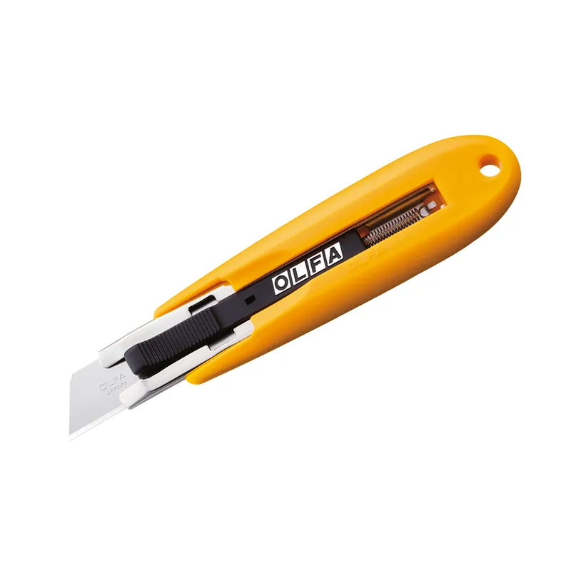

Cuchillos de seguridad SK-10
Distribuidor exclusivo en Chile · Marca japonesa desde 1956
Cuchillos de seguridad OLFA: menos cortes en tu faena, bodega o planta
Cuchillos de seguridad e industriales de hoja segmentada, siempre afilada. Para equipos de minería, logística, industria y construcción. Imex es el distribuidor exclusivo en Chile.
- Hoja segmentada siempre afilada
- Certificaciones como GS (según el fabricante)
- Repuestos para cada modelo

Los más vendidos
Lo que más piden nuestros clientes, en cada línea
Cuchillos de seguridad e industriales, repuestos, raspadores y más. Cotiza el que necesitas.
Contenedores y portacuchillos DC-5
Contenedor de Cinturón Reutilizable para Fragmentar y Desechar Segmentos de Hojas Usadas
Cuchillos estándar 180-BLACK
Cuchillo Estándar de 9 mm. Metálico con Seguro Automático y Clip

Seguridad en el corte
Una herramienta de corte no debería ser el riesgo más fácil de evitar
Un cuchillo de hoja fija y expuesta puede seguir siendo la herramienta más común en una bodega o faena. Los cuchillos de seguridad OLFA permiten cambiarla: la hoja se retrae al soltar el material, la punta protege el contenido o la pinza abre sin cortarlo. Es una forma concreta de aplicar la jerarquía de controles de tu matriz de riesgos.
Hoja que se retrae
14 modelos de seguridad: auto-retráctiles, de máxima seguridad, desechables y tipo pinza.
Control del descarte
Contenedores de hojas y portacuchillo de cinturón, para que no queden hojas sueltas.
Reposición simple
56 repuestos de hoja. Cada cuchillo indica qué hojas usa.
Ver cuchillos de seguridad Leer la guía de seguridad industrial
Míralos en acción
Cuchillos de seguridad en video
Videos de nuestro canal de YouTube. Se cargan solo cuando los abres.
Dónde se usan
Cuchillos para los rubros donde el corte es parte del trabajo
Minería, logística, retail, industria alimentaria, construcción y talleres. Estas son aplicaciones típicas; en la guía de seguridad industrial encuentras el detalle y los modelos sugeridos por tarea.
Minería
Apertura de cajas, film y zunchos de insumos y repuestos; cortes en caucho y plásticos; raspado de residuos y etiquetas en equipos; ambientes con aceite o acetona.
Logística y centros de distribución
Apertura de cajas y retiro de film y zunchos.
Retail y supermercados
Apertura de cajas, retiro de etiquetas y cintas de embalaje.
Industria alimentaria
Apertura de bolsas y paquetes sin dañar el contenido (pinza PK-1) y de envases con herramientas de acero inoxidable detectables por detectores de metales o con certificado NSF (según sus fichas).
Construcción e instalaciones
Corte de alfombras y pisos, raspado de pintura, adhesivos y vidrios, cortes pesados con dos manos.
Talleres y manufactura
Cortes pesados y repetitivos, trabajos con aceite, cambio frecuente de hojas.
Productos
Un cuchillo para cada corte
Nueve líneas, de la seguridad industrial a las manualidades. Todo el catálogo se cotiza con Imex.
Cuchillos de seguridad
Prevención de riesgos, abastecimiento, bodegas, logística, minería, industria alimentaria y retail.
Cuchillos industriales
Minería, mantención, construcción, talleres, bodegas e industria en general.
Cuchillos especiales
Instaladores, talleres de publicidad y señalética, carpinterías y mantención.
Contenedores y portacuchillos
Prevención de riesgos, bodegas, mantención y cualquier equipo que cambie hojas a diario.

Repuestos y hojas
Compras recurrentes de empresas: cada cuchillo indica qué hojas usa y cada hoja, para qué cuchillos sirve.
Manualidades y precisión
Talleres de costura, maquetería, arquitectura, diseño y manualidades.
Cómo comprar
De la consulta a la cotización, en tres pasos
1
Cuéntanos qué cortas
Usa el asistente, el WhatsApp o el formulario: rubro, tarea de corte y cantidad.
2
Recibe una propuesta
Un ejecutivo de Imex te propone los modelos y los repuestos para tu equipo.
3
Coordina la entrega
Confirmas la cotización y coordinamos la entrega con Imex.
Lo que todo OLFAN debe saber
La historia de la hoja segmentada
1
1956
OLFA nace de la mano de Yoshio Okada y su familia.
2
Una imprenta
El Sr. Okada trabajaba en una imprenta y cortaba con hojas de afeitar: solo se usaban las esquinas y luego se desechaban.
3
Una idea
Se inspiró en los bordes afilados de los vidrios rotos y en los segmentos de las barras de chocolate.
4
El primer cúter
Así creó el primer cúter con hoja fragmentada.
Contacto
¡Contáctanos!
Si tienes algo que contarnos sobre nuestros servicios, buscas más información sobre nuestros productos o deseas agendar una visita, te invitamos a contactarnos. Escríbenos a contacto@olfa.cl o llámanos al (02) 2396 4622; nuestro equipo responderá todas tus dudas.
¡Estamos aquí para ayudarte!
Imex Estado Ltda.
Santa Bernardita 12025, Parque Industrial Puerta Sur, San Bernardo.
(02) 2396 4622
contacto@olfa.cl
Horario de atención: Lunes a Jueves de 8:30 a 16:30 - Viernes de 8:30 a 15:00.
Equipa a tu equipo con cuchillos de seguridad
Cuéntanos tus tareas de corte y cuántas personas las hacen. Te respondemos con una propuesta por tarea.